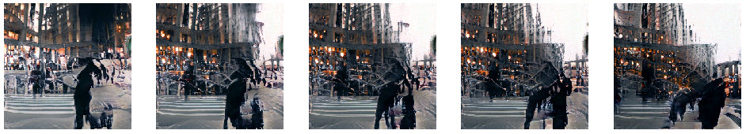
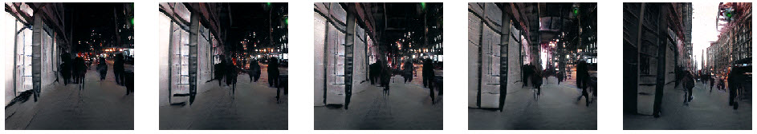

RE•WORK Deep Learning Summit,
Jan 2020
NYC Media Lab Summit, Sep 2019
Digital Camera, StyleGAN
Developer, Photographer
Can we break the dawn of NYC with a sunrise from the Forbidden City, or can we resurrect Notre-Dame with our hundreds-of-years collective memories? “Machine Timing” is an experiment that explores the aesthetics, approaches, and constraints of using deep generative networks as a tool of time-manipulation in video footage.
Deep generative networks, such as VAEs and GANs, are often used to synthesize realistic-looking pictures. However, during our experiments with such models and related techniques, we found that time-based information, along with the synthesizing subject, is also "encoded" into the trained models. As a result, we realized that if we guide the synthesizing process along the direction of a time-based factor, we can use deep generative networks to "manipulate time" in video footages.
 